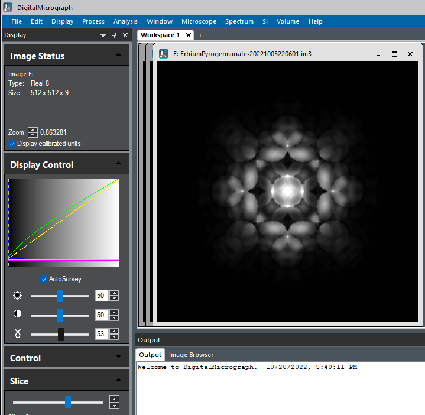

Visualisation¶
Pyemaps provides a set of helper functions with python’s matplotlib to display diffraction patterns.
si_dif.py and si_bloch.py sample code demonstrate the rendering of diffraction patterns generated for silicon crystal by plotting its kikuchi lines, diffracted beams and HOLZ lines for kinematic simulation and show the raw image data in the case of dynamic or Bloch simulation.
Users can also get direct access to diffraction patterns data and visualize the pattern with many other third party tools such as ImageJ, DigitalMicrogrpah.
Rendering Kinematic Diffraction Patterns¶
pyemaps kinematic diffraction simulation results are captured by DP or diffPattern clases:
from pyemaps import Crystal as cr
si = cr.from_builtin('Silicon')
_, dp = si.generateDP()
dp.klines # Kikuchi lines list
dp.nklines # number of Kikuchi lines, same as len(dp.klines)
dp.disks # diffracted beams list
dp.ndisks # number of diffracted beams, same as len(dp.disks)
dp.hlines # HOLZ lines list
dp.nklines # number of HOLZ lines, same as len(dp.hlines)
where dp.klines is a python list of Line class objects and dp.disks of Disk class objects and so on. Each of the objects is accessible for its own data such as points when plotting.
Below is an exmaple of rendering a diffraction pattern generated for Diamond builtin crystal in DigitalMicrograph:
import numpy as np
import DigitalMicrograph as DM
from pyemaps import Crystal as cr
di = cr.from_builtin('Diamond')
_, dp = di.generateDP()
def show_diffract(dp, md=1, name = 'Diamond'):
shape = (2*XMAX*mult,2*YMAX*mult)
#A new image from numpy array and initilize it to black background
dif_raw = np.ones((shape), dtype = np.float32)
dif_raw[:,:] = 255.0
#DM create the image
dm_dif_img = DM.CreateImage(dif_raw)
dif_img = dm_dif_img.ShowImage()
dif_img_disp = dm_dif_img.GetImageDisplay(0)
#set image title
img_title = str(f'Kinematic Diffraction Simulation: {name} in {DIFF_MODE[md-1]} Mode')
dm_dif_img.SetName(img_title)
num_klines = dp.nklines
if num_klines > 0:
klines = dp.klines
for kl in klines:
x1, y1, x2, y2 = kl
xx1, yy1, = (x1 + XMAX)*mult,(y1 + YMAX)*mult
xx2, yy2 = (x2 + XMAX)*mult,(y2 + YMAX)*mult
kline = dif_img_disp.AddNewComponent(2, xx1, yy1, xx2, yy2)
SetCommonProp(kline)
kline.SetForegroundColor(0.7, 0.7, 0.7) #grey
kline.SetBackgroundColor(0.2,0.2,0.5) # dark blue
num_disks = dp.ndisks
if num_disks > 0:
disks = dp.disks
for d in disks:
x1, y1, r, i1, i2, i3 = d
xx, yy, rr = (x1 + XMAX)*mult, (y1 + YMAX)*mult, r*mult
idx = '{:d} {:d} {:d}'.format(i1,i2,i3)
disk = dif_img_disp.AddNewComponent(6, xx-rr, yy-rr, xx+rr, yy+rr)
SetCommonProp(disk)
disk.SetForegroundColor(0.0,0.0,1.0) # blue
disk.SetBackgroundColor(0.5,0.5,0.75) # dark blue
if md == 1:
disk.SetFillMode(1)
else:
disk.SetFillMode(2)
indxannot0 = DM.NewTextAnnotation(0, 0, idx, 10)
t, l, b, r = indxannot0.GetRect()
w = r-l
h = b-t
nl = xx - ( w / 2)
nt = yy -rr - h if md ==1 else yy - (h / 2)
indxannot = DM.NewTextAnnotation(nl, nt, idx, 10)
dif_img_disp.AddChildAtEnd(indxannot)
SetCommonProp(indxannot)
indxannot.SetForegroundColor(0.9,0,0) #light red
indxannot.SetBackgroundColor(1,1,0.5)
if md == 2:
num_hlines = dp.nhlines
if num_hlines > 0 :
hlines = dp.hlines
for hl in hlines:
x1, y1, x2, y2 = hl
xx1, yy1 = (x1 + XMAX)*mult, (y1 + YMAX)*mult
xx2, yy2 = (x2 + XMAX)*mult, (y2 + YMAX)*mult
hline = dif_img_disp.AddNewComponent(2, xx1, yy1, xx2, yy2)
SetCommonProp(hline)
hline.SetForegroundColor(0,0,0.8)
hline.SetBackgroundColor(0.2,0.2,0.5) # dark blue
del dm_dif_img
return 0
Visualing Dynamic Diffraction Patterns¶
The output from bloch dynamic diffraction simulation is an array of 2 or 3 dimensional floating numbers representing image intensities, depending on whether one or multiple slices of dynamic diffraction images are generated.
pyemaps provides an option for users to save the images as raw image files that can be imported into ImageJ or DigitalMicrograph. Refer to generateBloch or getBlochImages for details.
Below is a visualization of a raw bloch images files saved from a pyemaps dynamic simulation run in Digita;Micrograph. The raw image contains 10 images each at a sample thickness range betwwen 0 and 1000.
